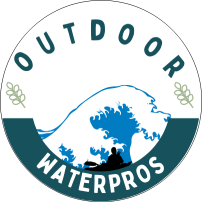

Overview
Purpose
Our purpose is to broaden our reach and connect with adventure enthusiasts worldwide. By creating a dynamic website, we aim to simplify the booking process, allowing customers to effortlessly explore our diverse range of rafting adventures and make secure reservations. Through captivating multimedia elements, we plan to showcase the breathtaking landscapes and exhilarating experiences we offer, building trust and credibility among potential adventurers. With our promotions and seasonal offers, our online presence aims to attract and enhance the overall adventure-seeking experience, solidifying our position as a leader in the rafting industry.
Audience
We look for nature lovers, individuals who are adventure enthusiasts, seeking thrilling outdoor experiences, and are interested in water-based activities and outdoor challenges. Primarily targeting adults and young adults, aged 18 to 45, who are more likely to seek and participate in adventurous activities. Active participants in online adventure communities, forums, and social media groups related to outdoor activities and adventure sports.
Branding
Website Logo
Style Guide
Color Palette
Typography
Work Sans Work+Sans 300
Headings Example Font
Normal Text/Paragraph Example Font
Element
Colored Callout Example Font
Element
Navigation
Wireframes
Home Page Wireframe

About Us Page Wireframe